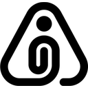

本地工作空间
V0.3

⚙
我
＋ 新建项目
⌕ 搜索内容
ORVYN
我的项目
0
从想法，到有依据的文档
＋ 新建项目
▤ 全部文档
◇ 从模板开始
⌕ 搜索内容
先一起聊清楚，再把确定的结论留下来。
个人工作空间
从一个想法开始
等待创建产品
对话梳理
阶段文档
每一步，都留下依据
＋ 添加材料
从模板开始
DeepSeek
↑
停止
Enter 发送 · Shift + Enter 换行
先梳理，再产出
当前阶段文档
尚未保存
保存 Markdown
阅读
源码
复制 Markdown
引用选段
版本历史
放弃草稿
专注阅读
保存在产品独立的「产出物」目录。保存后等待你确认，不会自动推进阶段。
取消
确定
搜索工作空间
×
全部
项目
文档
证据
对话